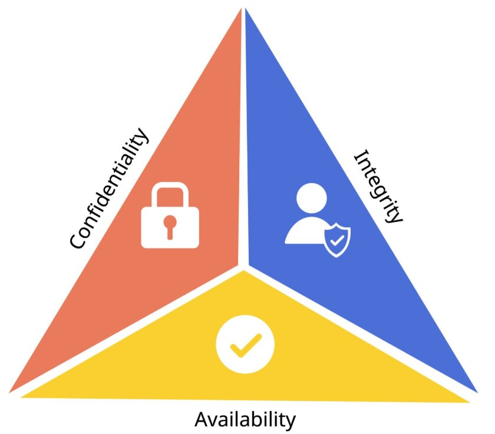
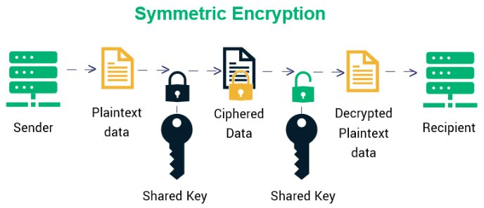
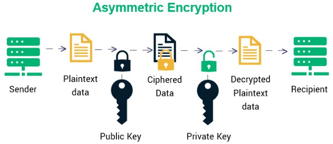
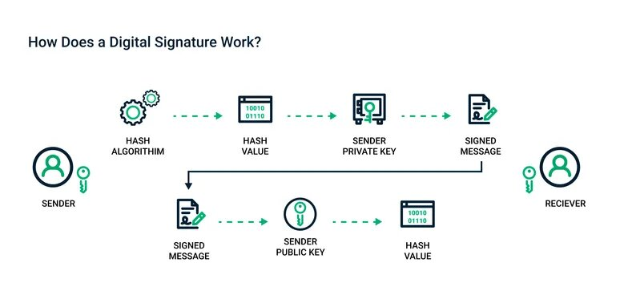
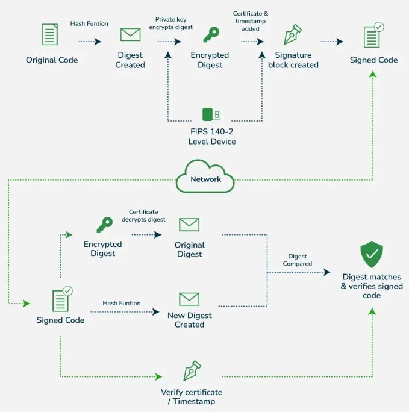

Computer Security, Encryption & Authentication
Computer security is the protection of the computer system from any event or action that could cause a loss of or damage to hardware, software, data, or information. This lesson covers the core principles, encryption mechanics, access rights, and structural defenses used to maintain secure systems at the AS/A Level standard.
Learning Objectives
- 11.1.2.4 Explain the CIA triad, encryption, digital signatures, and certificates
- 11.1.2.5 Describe authentication methods, access rights, and network security measures
1. The CIA Triad
The Computer Security Triad (CIA) is a foundational model designed to guide policies for information security within an organization.

Confidentiality, Integrity, and Availability
| Principle | Definition | Implementation / Purpose |
|---|---|---|
| Confidentiality | Ensures sensitive information is accessed only by authorized persons. | Implemented using usernames, passwords, Access Control Lists (ACLs), and encryption. |
| Integrity | Ensures data has not been tampered with and is correct, authentic, and reliable. | Protects against unauthorized deletion, addition, or modification. Implemented using hashing and data encryption. |
| Availability | Ensures information, networks, and resources are up and running for those who need them. | Implemented via backups and redundant systems. |
2. Encryption Fundamentals
The Secret Language Analogy
Imagine you and your friend invent a secret code where every letter is shifted by 3 positions (A→D, B→E). Only someone who knows the rule (the key) can read your messages. This is essentially what encryption does.
Key Terminology
| Term | Definition |
|---|---|
| Plaintext | Original, readable data |
| Ciphertext | Encrypted, unreadable data |
| Key | Secret value used to encrypt/decrypt data |
Symmetric vs Asymmetric Encryption


| Feature | Symmetric Encryption | Asymmetric Encryption (Public Key) |
|---|---|---|
| Definition | Uses the same secret key for both encryption and decryption. | Uses a pair of keys: a public key for encryption and a private key for decryption. |
| Advantages | Fast encryption/decryption; efficient for large data volumes. | Eliminates the key distribution problem; high security. |
| Disadvantages | Securely sharing the key is a major risk; not scalable. | Slow process; inappropriate for bulk message encryption. |
| Examples | AES, DES, Caesar cipher | RSA, ECC, SSL/TLS (HTTPS) |
Caesar Cipher Example (Symmetric)
Plaintext: HELLO WORLD
Key: Shift by 3
Ciphertext: KHOOR ZRUOG
H → K (+3) | E → H (+3) | L → O (+3)3. Digital Signatures & Certificates
Digital Signatures
A digital signature proves a digital message or document is authentic and hasn't been tampered with. It includes the original content and a signature block.

- How it works: The signature contains a hashed version of the document encrypted with the sender’s private key.
- Authentication: Confirms the message was really sent by the claimed sender.
- Integrity: Ensures content hasn't been altered after signing.
- Non-repudiation: The signer cannot deny later that they signed the document.
Digital Certificates
A digital certificate proves the authenticity of a device, server, or user. Only publicly trusted Certificate Authorities (CAs) can issue them.

Contents of a typical Digital Certificate:
- Owner Info: Who the certificate is for.
- Public Key: Used in encrypting data or verifying signatures.
- Issuer (CA): The trusted entity that issued the certificate.
- Serial Number & Validity Period: Unique ID and dates.
- Digital Signature: A signature from the CA proving the certificate wasn't altered.
4. Access Rights & Authentication
Access Rights (Authorization)
Access rights control what each authenticated user can do with data (Read, Write, Execute, Delete).
Access Rights Matrix Example
| User Role | Student Records | System Settings |
|---|---|---|
| Student | Read (own only) | No access |
| Teacher | Read / Write | No access |
| Admin | Read / Write / Delete | Full access (Execute) |
Authentication Methods
| Category | Description | Examples / Details |
|---|---|---|
| Knowledge-based (Something you know) |
Identifies users by asking for secret information. | Usernames, passwords, PINs. |
| Possession-based (Something you have) |
Uses physical objects (tokens) the user possesses. | Memory tokens: Magnetic cards. Smart tokens: OTP generators, Smart cards. |
| Biometric-based (Something you are) |
Translates a personal characteristic into a digital code. | Physiological: Face, fingerprint, iris. Behavioral: Keystroke, voice. |
5. Network Security Measures
| Measure | Definition | Primary Functions |
|---|---|---|
| Firewall | Software/hardware that filters information coming through the internet connection. | Protects from unauthorized intrusion; blocks access from the outside. |
| Proxy Server | Hardware/server that acts as a middleman between the user and the web server. | Hides user's real IP address; filters internet traffic; caches files to speed up access. |
| IDS (Intrusion Detection System) | Software built to monitor network traffic and discover irregularities. | Scans for harmful activity; issues alerts to administrators. |
Common Pitfalls
Encryption ≠ Hashing
Encryption is reversible (you can decrypt). Hashing is one-way (you cannot reverse a hash). Both are used together in Digital Signatures.
Authorization ≠ Authentication
Authentication verifies who you are (Passwords, Biometrics). Authorization determines what you can do (Access Rights Matrix).
Independent Practice
Encrypt the word "PYTHON" using a Caesar cipher with key = 7.
Compare the functionality of a Firewall with that of a Proxy Server. Explain why an organization might choose to implement both simultaneously.
Evaluate the use of biometric authentication versus possession-based authentication (smart tokens) for securing a high-level corporate server room.
Describe the exact step-by-step cryptographic process a sender uses to apply a digital signature to a document, and the process the receiver uses to verify it.
Plenary / Self-Check
Q1: What are the three elements of the CIA triad?
Q2: How many keys does symmetric encryption use?
Q3: What are the three authentication factors?